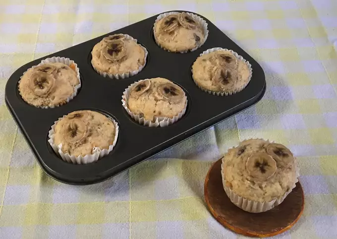

- Ingredientes:
- 12 raciones
- 1 y 1/2 taza harina
- 3-4 bananas chicas
- 1/2 taza azúcar
- 1 cda polvo de hornear
- 1/2 cdita canela en polvo
- Pizca sal
- 1 huevo
- 1/2 taza aceite
- 1/2 taza leche
- Opcional
- 100 grs nueces/chispas de chocolate
- En un bowl, mezclar todos los secos (harina, azúcar, polvo de hornear, canela, sal).
- En otro bowl con batidora de mano o tenedor batir el huevo con el aceite.
- Juntar la mezcla líquida a la sólida y comenzar a agregar la leche. Revolver hasta que quede una masa homogénea.
- Aplastar las bananas y agregarlas a la mezcla.
- ✅ En el caso de agregar nueces o chispas de chocolate, primero las mezclan con dos cucharadas de harina y las incorporan de forma envolvente. Esto es para que al cocinarse los muffins, no se concentren todas en el fondo de los mismos, sino que queden distribuidos.
- Colocar los pirotines en el molde de muffins y poner una cucharada colmada de mezcla en cada uno. Los deben llenar casi en su mayoría.
- Yo agarré media banana y corté pedacitos de banana bien finitos para ponerles a los muffins de arriba y así decorarlos. En el caso que hagan esto, cuando los coloquen presiónenlos un poco a la mezcla así no se salen una vez cocidos los muffins.
- Mandar al horno precalentado a 180 grados durante 20-25 minutos. Una vez que pase el tiempo, los pinchan con un cuchillo y si no sale masa cruda están hechos.